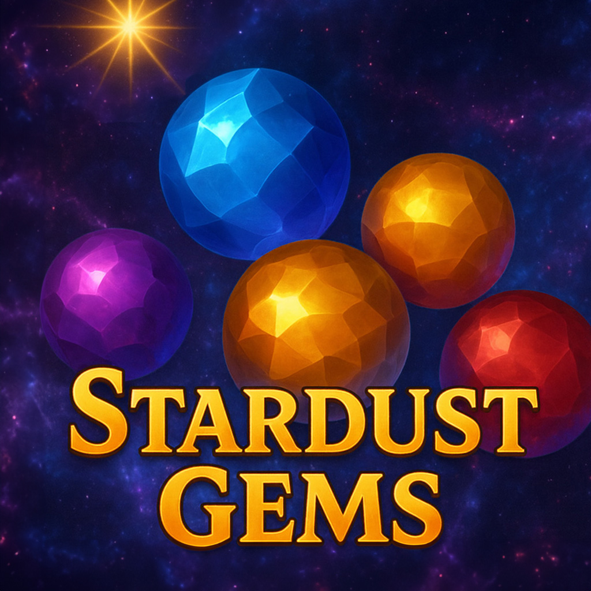
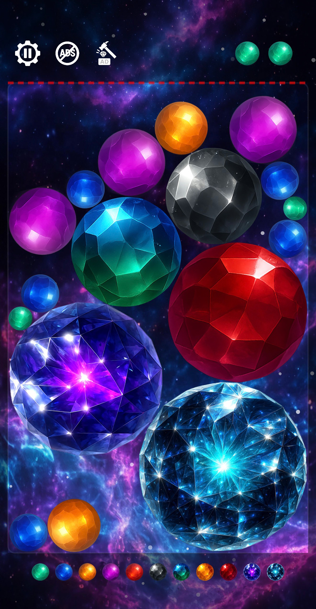

Stardust Gems: A meditative gravity-based arcade experience by RIDDLE 12
Stardust Gems is a modern merge and gravity puzzle designed to calm your mind while challenging your reflexes. Each crystal reacts to motion and merges with realistic physics. Tilt your phone to guide your gems and create dazzling fusions.
Developed by RIDDLE 12, an independent Los Angeles studio, the game blends precision, beauty, and a sense of calm focus. Perfect for both short sessions and longer meditative play.
Gameplay
Stardust Gems transforms the “merge two” genre through tactile physics and gyroscope control. Every tilt changes gravity, making each moment fluid and unique — an elegant balance of motion and stillness.
Key Features
- Realistic physics and gyroscope-based gravity control
- Relaxing ambient soundtrack and minimalist UI
- Offline-friendly and optimized for all iPhones
- Beautiful visual feedback and smooth performance
- Made with love by RIDDLE 12 in Los Angeles
Gameplay & Strategy Tips
Each crystal has unique mass and movement. Observe how they roll, slide, and collide. The secret lies in balance and timing — not speed. Experienced players often describe it as a “gravity meditation.”
Behind the Design
When we started building Stardust Gems, our goal was to design a gravity arcade game that felt as natural and elegant as watching stardust fall through space. Every movement in the game is calculated with physics inspired by real-world motion, but tuned for playability and comfort. The challenge was to make the experience feel alive, not mechanical.
We experimented with different types of crystal behavior — friction, rotation, and bounce intensity — until the gameplay felt both intuitive and hypnotic. The result was a system where each crystal has its own weight and surface reaction, turning every merge into a satisfying micro-event. It’s not about racing or scoring high; it’s about finding rhythm and flow.
One of the key design decisions was to use the phone’s gyroscope for natural control. Instead of pressing buttons, the player tilts the device to change gravity. This creates a physical connection between the player’s movement and the in-game world — a concept we call “embodied gameplay.”
Visually, Stardust Gems follows the aesthetic language of minimalism and light. The glowing crystals represent fragments of focus drifting through a quiet universe. Combined with subtle ambient sound, the game aims to lower tension, slow down the mind, and invite creative attention.
At RIDDLE 12, we believe that modern games can be meditative and expressive at once. Stardust Gems is a reflection of that philosophy — a small world of motion, silence, and clarity in your pocket.
FAQ
Is Stardust Gems free?
Yes, it’s free to play with optional future expansions.
Do I need internet?
No. The game works offline and saves progress locally.
Who made it?
Created by RIDDLE 12 — a small independent studio from Los Angeles focused on creative and meditative gameplay.